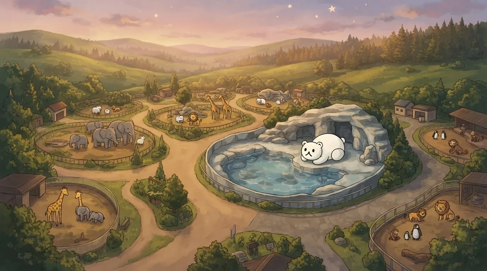
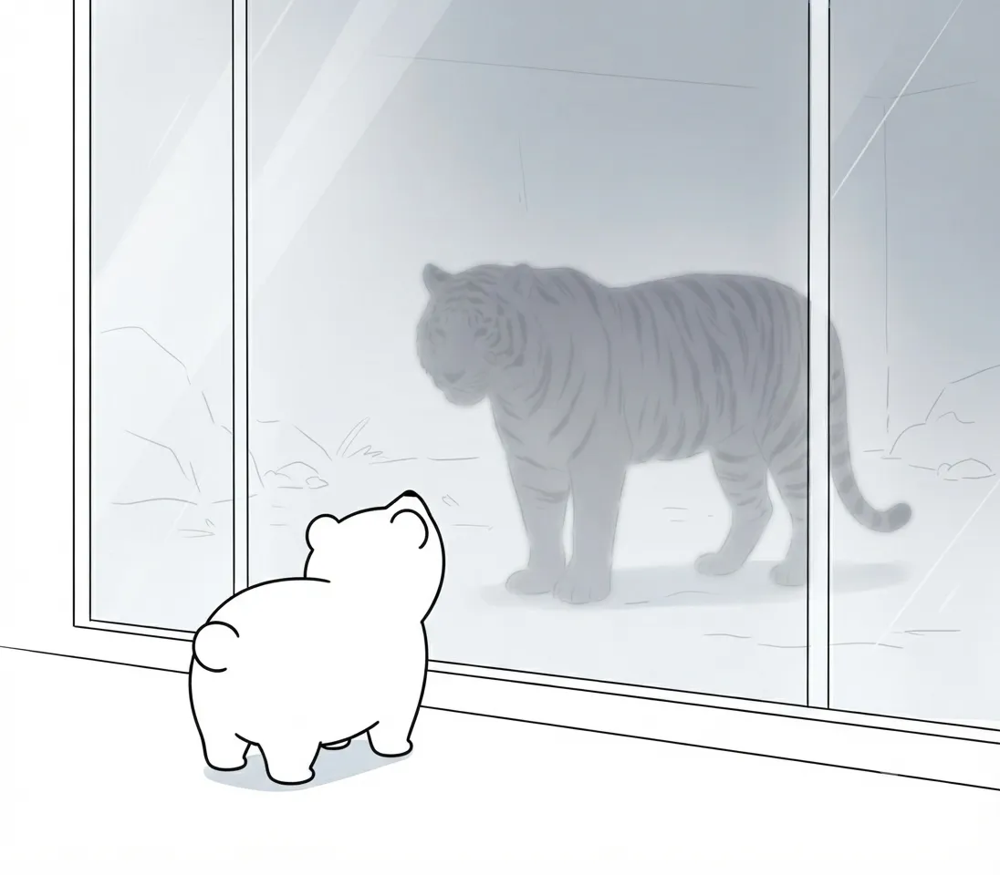
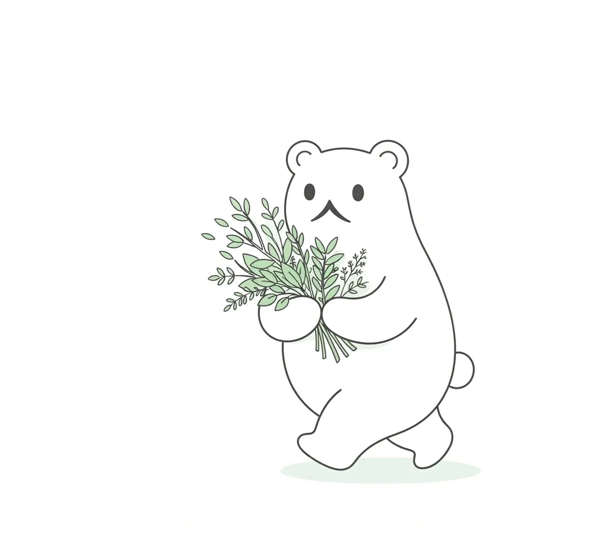
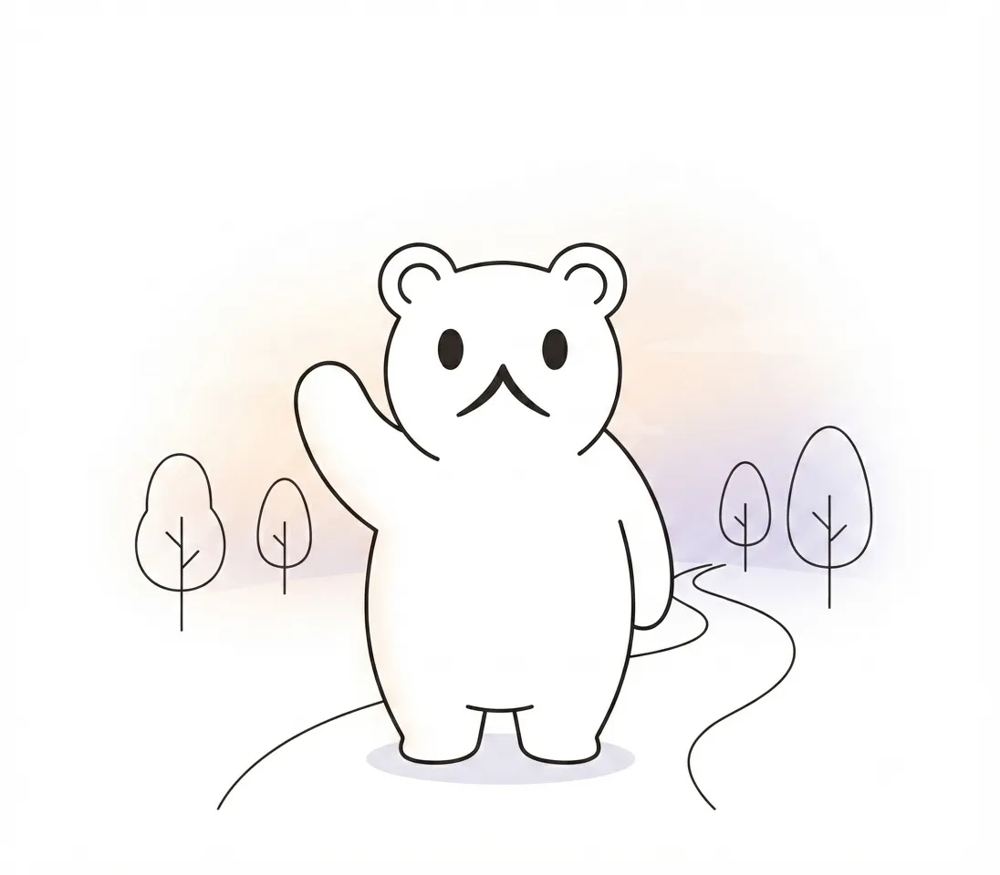

私たちの理念
動物たちと出会い、自然の未来を考える。その場所であるために。
見せる動物園から、考える動物園へ
私たちはこれまで、北の大地に生きる多様な動物たちの姿を来園者の皆様にお届けしてきました。しかし、ガラス一枚を隔ててただ珍しい生きものを眺めるだけでは、彼らが本来暮らしている環境の広がりや、そこで起きている変化に気づくことは難しいかもしれません。
北海道○○動物園が目指すのは、単に動物を「見せる」だけの場所ではありません。目の前の一頭がたどってきた背景に思いを馳せ、人と自然がこれからどう向き合っていくべきかを共に「考える」動物園へのシフトです。冷たい氷の海を泳ぐホッキョクグマの姿や、深い森に生きるエゾシカの息づかいは、私たちが同じ地球の環境を共有しているという動かぬ事実を教えてくれます。

私たちの取り組み
「考える動物園」を実現するため、当園では日々の飼育環境の最適化にとどまらず、野生本来の行動を引き出すエンリッチメント（環境エンリッチメント）に力を入れています。動物たちが退屈せず、生き生きと暮らせる空間をつくること。それは、訪れた方々に彼らの自然な営みと美しさをそのまま感じてもらうための大切な基盤です。
また、種の保存に向けた繁殖の取り組みや、北の生態系の現状を伝える教育・普及活動も行っています。日々の観察のなかで得られた発見を発信し、動物たちの暮らしの裏側にあるストーリーを紐解くことで、訪れる一人ひとりの心に小さな気づきが芽生えるような環境づくりを続けています。

来園される方へ
動物園の門をくぐり、北の動物たちの息吹に触れたとき、ふと自分の足元にある自然や遠い世界への想像力が広がる——。そんな、大人にとっても静かで豊かな時間が流れる場所でありたいと私たちは願っています。
週末のひととき、家族や大切な人と一緒に、あるいは自分自身と向き合う静かな散策の場として。この動物園での小さな出会いが、あなたと自然の未来をつなぐ新しい扉を開くきっかけになることを、私たちは心から楽しみにしています。
